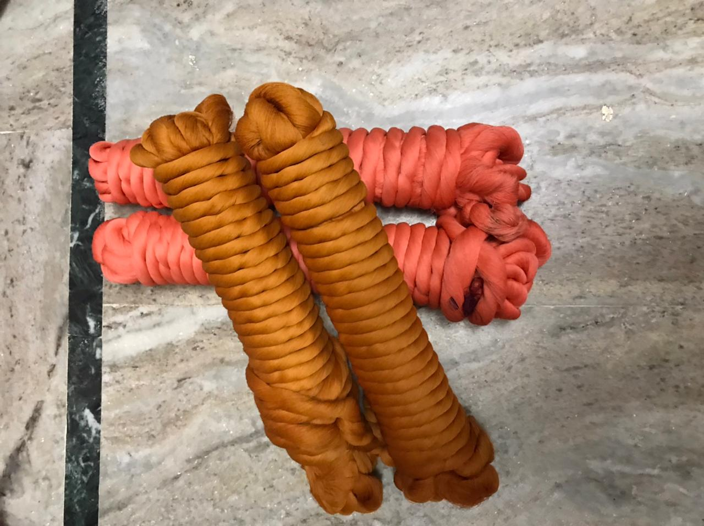

<!DOCTYPE html>
<html>

<head>
  <title>Craft Website</title>
  <link rel="stylesheet" href="./assets/css/process.css">
  <link rel="stylesheet" href="./assets/css/style.css">
</head>

<body>

  <div class="navigation-bar">
    <div id="navigation-container">
      
      <ul>
        <li><a href="index.html">Home</a></li>
        <li><a href="history.html">History</a></li>
        <li><a href="process.html">Process</a></li>
        <li><a href="#">Contact Us</a></li>
      </ul>
    </div>
  </div>

  <div class="card">
    <h2>Process</h2>
    <h2>Tools and Raw Materials</h2>
    <ul>
      <li>The yarn is purchased from Hindupur, Andhra Pradesh and also from 2 or 3 districts of Tamil Nadu, Guntur district and Tanuku</li>
      <li>Chemical dyes from Bombay, Ahmedabad and Surat through a dealer</li>
    </ul>
  </div>

  <div class="card2">
    <h2>Equipment:</h2>
    <ul>
      <li>Weaving loom : Traditional weaving loom is used for weaving process.</li>
      <li>Warping wheel : It is used to prepare lengthy warp threads</li>
      <li>Reeling machine : Is used to make Spools.</li>
      <li>Fly shuttle : Is used to load the spindle while weaving.</li>
      <li>Chakra </li>
      <li>Dhabis: Help in designing the fabric</li>
    </ul>
  </div>

  <div class="card">
    <h2>Materials:</h2>
    <ul>
      <li>Cotton Thread : Pure cotton threads are used in weaving process. </li>
      <li>Dye colors : Used to dye the cotton threads as per requirement.</li>
      <li>Boiling : While boiling the raw cotton, costic acid and soap powder are used. </li>
      <li>Washing : Sodium, Alum, Costic acid and Dhravakam are used in washing process. Dyeing : Hydro sulphite, color and costic acid are used for dyeing.</li>
    </ul>
  </div>

  <div class="card">
    <div class="row">
      <div class="column">
        <a target="_blank" href="./assets/img/Boiling.jpeg">
          
        </a>
        <div class="desc">Boiling</div>
      </div>

      <div class="column">
        <a target="_blank" href="./assets/img/dyingyarn.jpeg">
          
        </a>
        <div class="desc">Dying</div>
      </div>

      <div class="column">
        <a target="_blank" href="./assets/img/washing2.jpeg">
          
        </a>
        <div class="desc">Washing</div>
      </div>

      <div class="column">
        <a target="_blank" href="./assets/img/spinning.jpeg">
          
        </a>
        <div class="desc">Spinning</div>
      </div>

      <div class="column">
        <a target="_blank" href="./assets/img/warping.jpeg">
          
        </a>
        <div class="desc">Warping</div>
      </div>

      <div class="column">
        <a target="_blank" href="./assets/img/weaving.jpeg">
          
        </a>
        <div class="desc">Weaving</div>
      </div>
    </div>
  </div>

<div class="card2">
  <h2>Boiling and Dyeing Yarn</h2>
  <p>The artisans first boil the yarn for 12 hours and then dye it with chemicals. They are boiled in a mixture of Hydrosulphite, color, water and costic acid, which is mixed in a boiler. The most important aspect in this process is the mixing of colors, which will give unique and durable color to the fabric. The yarns are dipped in the required color and the worker goes on turning the yarn so that the color is evenly mixed in the yarn.The dyed yarn is dried in the sun and then after drying, its warped by stretching it on boxes. Dyeing is done by men onl</p>
</div>

<div class="card">
  <h2>Washing</h2>
  <p>After coloring, the yarn is sent for washing. They are first washed in water with chemical (sodium, alam, costic acid and dharvakam) in it. These chemicals helps in sustaining the color and
make the yarn look in rich color and shiny. They are again rinsed in plain water and kept for
drying in the sun. Dhamyanti and Chilka Pacha color are dyed twice to get the luster’s rich colour.</p>
</div>

<div class="card2">
  <h2>Spinning</h2>
  <p>The cotton yarn after dyeing and starching is brought for spinning process. Bundle of yarn is
  placed on the spinning wheel machine. The cotton strand is reeled to spools and the wheel is
  operated. The workers simultaneously keep joining the broken strands for continuous reeling
  of the threads. These spools are then sent for warping process.</p>
</div>

<div class="card">
  <h2>Warping</h2>
  <p>Warping is the special and important process of Mangalgiri sarees. The warping is carried out in
 streets preferably in the early morning, so that the color of the silk yarn does not fade. First the
 multi-ply spools are fixed to the warping machine (warping wheel), and the yarn is reeled on the
 warping machine. This Process is locally known as Assu. After Assu process, the length of the
 yarn is removed from the warping wheel and tied between two poles and it is stretched. Entangles in the yarn are checked and the breaks are knotted. Bamboo sticks are inserted between
 the threads into the warp, as it is easy to trace the entangled cotton threads. Starch is sprayed
 on the threads. Starching is done so that the color in the yarn will get more permanent in nature
 and gives the yarn a polished look. Starching process is repeated 10 to 12 times, which makes
 the thread thick and strong. Starching also acts as gum while weaving, which helps the threads to
 interlock intensely. After starching the yarn is stretched and the strands of yarn is passed through
 the reeds and then rolled on an iron rod, which is fixed in loom to weave. Women do the warping,
 sizing and threading</p>
</div>

<div class="card2">
  <h2>Weaving</h2>
  <p>The prepared yarn iron rod is fixed to the weaving loom and weaving process is started. The
weaver interlaces the cotton threads of warp. The shuttle passes through the opens formed
when the pedal is operated to interlock the threads of warp. Artisan use different colors of contrasting threads while weaving to create designs. The proton of woven cloth is wounded to the
wooden beam, which is located in front of the weaver. After weaving of 6 yards of fabric, the
portion of unwoven warp is intentionally left before and after the sari weaving, which is later
knotted for fringe. It takes nearly 2 to 3 days to complete one sari. The length of 3 saris warp is
loaded into the loom at a time. Weaving is done by both men and women</p>
</div>

<video src="./assets/video/video1.mp4" width="33%" autoplay poster=""controls>
</video>

<video src="./assets/video/video2.mp4" width="33%" autoplay poster=""controls>
</video>

<video src="./assets/video/video3.mp4" width="33%" autoplay poster=""controls>
</video>

<body>
</html>
